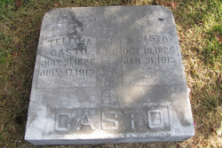

Nicholas L. Casto
19 October 1825 – 31 January 1913
Casto line · Mason County, Virginia; Tug Fork, Jackson County, West Virginia
Profile status: SUPPORTED
Quick Facts
Born
19 October 1825, Mason County, Virginia SUPPORTED (the shared stone gives 19 October 1825; the obituary’s age at death points to about 11 October 1825, and a 2000 forum outline gives 18 October — a low-grade variant. His birthplace is Mason County by the stone and the trees; the site is unresolved. An old compiled account’s “12 March 1820, Virginia – 3 September 1905, West Virginia” is contradicted)
Died
31 January 1913, Jackson County, West Virginia DOCUMENTED (shared headstone, Old Siniaville Cemetery, “Nicholas Casto Plot”: “N. CASTO / OCT. 19, 1825 / JAN. 31, 1913”. The obituary, Mountaineer, 7 February 1913, gives 30 January — the day is open)
Married
Telitha Jane Casto, 7 August 1845, Jackson County, Virginia
DOCUMENTED (Jackson County marriage register, read from the image: “Nicholas Casto / To / Letha Casto” — married by “Elij. J. Rollins” — “aug 7th 1845-”. The register names no parents for either spouse. Her maiden name was Casto — a cousin marriage)
Occupation
Farmer; ordained Methodist Protestant minister; author of The Social Songster (1868); constable in 1860; member of the West Virginia Legislature; Justice of the Peace; three-time president of the Board of Supervisors SUPPORTED (the ministry and the hymn book are DOCUMENTED; the public offices rest on House’s Pioneers, a published secondary source — the original county records have not been inspected)
Military
Elected captain, Tug Fork Home Guard, 1863 DOCUMENTED (Union-aligned local defense — Captain Nicholas Casto’s Company, Co. F, Elk Fork, July–November 1863. He was NOT a federal soldier: state militia, not federal service)
Buried
Old Siniaville Cemetery, Staats Mills, Jackson County, West Virginia SUPPORTED (shared stone, “Nicholas Casto Plot”; the full 9-row cemetery transcription, visited 11 May 2006, does not list Nicholas or Telitha — the transcription warns rows are uneven and stones lichen-covered or eroded, so absence is not disproof)
Religion
Methodist Protestant SUPPORTED (ordained minister; the Sinaiville Methodist Protestant Church, organised 1840, was his church)
Immediate Family
Parents
Rev. George W. Casto ×
Sarah “Sally” Ours SUPPORTEDTheir place as Nicholas’s parents is carried as the position in the research folder at SUPPORTED — a strong reconstruction, not proved. George’s 1845 will names his son Nicholas, and the 1850 census cluster (households 351/352/353) maps onto the will. George, born about 1781–1786, died 1845; Sarah, born about 1791–1793, died 1860, 1862 or 1882 — all three years are open. The “Rev.” before George’s name is UNBACKED — no church minutes, ordination, circuit appointment, sermon, obituary reference, or denomination history names him as a minister; the title question is open. The full conflicts are in Research Notes.
Spouse
Telitha Jane Casto (born 31 July 1826; died 17 July 1913), married 7 August 1845, Jackson County, Virginia
DOCUMENTEDMarriage 7 August 1845, Jackson County — the register writes the bride “Letha Casto” and names the minister, Elij. J. Rollins, but no parents for either spouse. Her maiden name was Casto: Nicholas married his cousin.
Children
Louisa Casto (born 18 November 1847; died 30 March 1893; married Enoch Staats 14 June 1862)
SUPPORTEDEmily Jane Casto (born 1850; died 1911; married William F. Staats 3 June 1866)
SUPPORTEDMartha A. Casto (born 3 November 1851; died 28 April 1857, aged 5)
SUPPORTEDAddison A. Casto (born 7 July 1854 by the research folder, 17 July 1854 by WV Pioneers; died 26 May 1936; married Rua Thomas)
SUPPORTEDBraxton Eustes Casto (born about 1858; in the 1860 census as “Curtis B.”, age 2; likely died young)
SUPPORTEDMary Alice Casto (born 1 August 1860 — twin with Sarah; died 26 August 1931; married Riley Staats 17 July 1881)
SUPPORTEDSarah Casto (born 1 August 1860 — twin with Alice; died 19 December 1936; married Pleasant Summers Casto 11 December 1879)
SUPPORTEDWilliam H. Casto (born 14 March 1863; died 2 May 1937 — WV Pioneers gives 21 May 1937; married (1) Julia Heck, (2) Ruby Casto)
SUPPORTEDGeorge N. Casto (born 21 March 1865; died 17 April 1936; married Esther C. Scarberry 25 December 1888; buried Pine Hill Cemetery)
SUPPORTEDEverett (Evert) Casto (born 1869 — the 1921 genealogy gives 7 February 1872; died 1946; married Hattie Johnson)
SUPPORTEDLenora (Nora) Casto (born May 1871 — Don Norman gives 1872; died 1955; married Okey Johnson Parsons 7 January 1892)
SUPPORTEDArzona Casto (born 1880 — listed on FamilySearch only, spelled “Arzona” there; absent from the 1880 household)
UNPROVEDEmily Jane is the direct line. The roster of twelve is carried on the 1900 census image — Telitha, 12 children born, 8 living — and on FamilySearch’s 12-child list. The rosters disagree: research 10, WV Pioneers 12, Don Norman and the 1921 genealogy 9, Vickers 8, the Parsons book 9, Casto Connections 10, Geni 11 (no Arzona). The unnamed child born in 1861, named only in Casto Connections Issue 3 and not found in the vital records, would make thirteen — it is carried as a conflict, not as a 13th child. Addison is one man (Adam/Augustine), not two. Braxton Eustes occupies the “Curtis B.” roster slot. Granderson Staats’s wife Telitha is not added here — she is Charles Casto × Martha E. (Bonnet/Bennett) Casto’s daughter. The full conflicts are in Research Notes.
Siblings
John G. Casto (born 1814; died 1844; married Catherine Westfall 27 November 1831)
SUPPORTEDMary M. “Polly” Casto (born 1816; died 1906; married Joel Cunningham)
SUPPORTEDPhoebe Casto (born 1818; died 1877; married John Greathouse)
SUPPORTEDGeorge Casto Jr. (born 1822; died 1898; married Nancy Raines 26 December 1844)
SUPPORTEDElizabeth Casto (born 1826; married Elias Casto 14 January 1841)
SUPPORTEDDavid G. Casto (born 1827; died 1860; married Sarah Raines 16 February 1848)
SUPPORTEDJames Cunningham Casto (born 1829; died 1919)
SUPPORTEDLouisa Casto (born 1831; died 18 May 1883; married David L. Casto)
SUPPORTEDJoel Casto (born 1834; died 1887; married Mary Margaret Bradley)
SUPPORTEDMatilda Casto (born 1835)
SUPPORTEDMargaret Casto (born 1809; married Thomas Cunningham 17 February 1829)
SUPPORTEDAbram G. Casto (born 1811; married (1) Zolpha Carpenter 1829, (2) Roseanna Slaughter 19 March 1843)
SUPPORTEDNicholas’s full siblings are George × Sarah’s eleven children; Margaret and Abram G. are half-siblings by George’s first wife, Elizabeth Westfall. Joel is Gen V couple 18 (Joel Casto × Mary Margaret Bradley). A possible twelfth child of George × Sarah, a daughter Sarah, appears in a compiled sibling list and the Sinaiville first-members roster but in no other source — open, not added. No sibling has a profile page, so no sibling name is linked here.
On Family Tree Sites
Life Timeline
19 October 1825 · age 0
Born, Mason County, Virginia SUPPORTED (stone; the obituary’s age at death points to about 11 October 1825)
7 August 1845 · age 19
Married Telitha Jane Casto, Jackson County DOCUMENTED (marriage register image; the bride is written “Letha Casto”; minister Elij. J. Rollins)
1850 · age 24
Census, Jackson County, household 351: Nicholas 24, wife “Callitha” 23, infant daughter Louisa 3 SUPPORTED (transcription read; the image was not re-read in this pass)
1860 · age 34
Census, Jackson County: constable; household Louisa 13, Emily J. 10, Addison A. 5, Curtis B. 2 SUPPORTED (transcription read; the image was not re-read in this pass)
July–November 1863 · age 37
Elected captain, Tug Fork Home Guard, Co. F, Elk Fork DOCUMENTED (Union-aligned local defense; not a federal soldier)
3 June 1866 · age 40
Daughter Emily Jane married William F. Staats SUPPORTED (marriage index, Casto Connections Issue 24 p. 65; the FamilySearch index gives 31 May 1866 and the image is not viewable — the date conflict stands)
1868 · age 42
The Social Songster published, Cincinnati DOCUMENTED (authorship and publication; copyright 1866; 246 pages, 170 hymns, words only)
1870 · age 44
Census, Jackson County SUPPORTED (transcription read; the image was not re-read in this pass)
1880 · age 54
Census, Jackson County SUPPORTED (transcription read; the image was not re-read in this pass)
1900 · age 74
Census, Washington District, Jackson County, dwelling 329, family 341: Telitha, 12 children born, 8 living DOCUMENTED (image read — FamilySearch ark S3HY-DTD3-NLW, image 471 of 475)
30 or 31 January 1913 · age 87
Died, Jackson County DOCUMENTED (obituary 30 January; stone 31 January — the day is open)
Burial
Old Siniaville Cemetery, Staats Mills SUPPORTED (shared stone, “Nicholas Casto Plot”)
Life Story
Nicholas L. Casto was born 19 October 1825 in Mason County, Virginia, and married Telitha Jane Casto on 7 August 1845 in Jackson County, when he was nineteen and she was nineteen. The marriage register writes her “Letha Casto” and names the minister, Elij. J. Rollins, but no parents for either spouse. Her maiden name was Casto: Nicholas married his cousin. They settled on Tug Fork near Staats Mills, where the censuses find them from 1850 through 1900. Twelve children are carried — the 1900 census counts twelve born to Telitha, eight living — and their daughter Emily Jane carries the line, marrying William F. Staats in 1866.
Nicholas was a farmer, and an ordained Methodist Protestant minister. An old compiled account calls him a circuit-riding Missionary Baptist preacher; the obituaries, the 1923 county history, and the hymnal catalogue all say Methodist Protestant, and that framing is contradicted. One officiation is documented: he married Christopher Marion Rhodes and Isabella Casto on 19 December 1872, as “Rev. N. Casto”. In 1868 he published The Social Songster: A New and Choice Selection of Hymns and Spiritual Songs, designed for all Denominations — 246 pages, 170 hymns, words only, pocket format — printed in Cincinnati. No digitised copy has been found.
In the Civil War he was elected captain of the Tug Fork Home Guard, and the cave called the Casto Hole, hidden in the woods near Limber’s Ridge on Straight Run, was the local Unionists’ refuge and meeting place. His lost poem against the Southern cause is never recovered, and the answering ballad, Elihugh Powers’s “The Casto Hole”, survives in nineteen of its original twenty-seven verses. Nicholas was Union-aligned local defence, not a federal soldier — no federal service is attached to him, and the lineage flag stays amber until the 141st Militia rolls are inspected. He also served his county: constable in 1860, member of the West Virginia Legislature, Justice of the Peace, and three times president of the Board of Supervisors — the offices rest on House’s Pioneers, a published secondary source, and the original county records have not been inspected.
His parents are carried as Rev. George W. Casto × Sarah “Sally” Ours, the position in the research folder, at SUPPORTED — a strong reconstruction, not proved. George’s 1845 will names his son Nicholas, and the 1850 census cluster maps onto the will. The “Rev.” before George’s name is unbacked: no church minutes, ordination, circuit appointment, sermon, obituary reference, or denomination history names him as a minister, and the title question is open. Nicholas’s verified ministry is his own; it does not transfer to his father.
Nicholas died in January 1913, aged eighty-seven, and is buried with Telitha under their shared stone in Old Siniaville Cemetery. The stone’s dates are legible and read from the photograph itself. No portrait of Nicholas exists anywhere — not in the folder, and not on any tree site checked — so the shared headstone is the hero.
Sources and Evidence
- Shared headstone, Old Siniaville Cemetery, Staats Mills, Jackson County, West Virginia (stone photograph, read from the image): “TELITHA JANE CASTO / JULY 31, 1826 / JULY 17, 1913” and “N. CASTO / OCT. 19, 1825 / JAN. 31, 1913”, “CASTO” at the foot DOCUMENTED (photograph; the same file is carried on Geni, Find a Grave, and FamilySearch)
- Jackson County Register of Marriages, 7 August 1845 (VRR Id 11181582, register p. 50; FamilySearch film 4226774, frame 00044 — image read): “Nicholas Casto / To / Letha Casto” — married by “Elij. J. Rollins” — “aug 7th 1845-” — the bride is written “Letha Casto”; no parents are named DOCUMENTED (register image)
- United States census 1900, Jackson County, West Virginia, Washington District, ED 39, Sheet 20A, dwelling 329, family 341 (FamilySearch ark S3HY-DTD3-NLW, image 471 of 475 — image read): “Casto Nicholas, Head, W, M, May 1826, 74, M, 52”; “Telitha, wife, W, F, May 1827, 73, M, 52, 12, 8” — 12 children born, 8 living DOCUMENTED (image read; the census birth months disagree with the stones)
- Jackson County birth register 1860–1861 (VRR Id 1817582, Jackson Co., p. 92 — image read): “Casto, A.” and “Casto, Sarah” — both F, Twins 2, date of birth Aug. 1, 1860, father N. Casto (farmer), mother Felitha DOCUMENTED (register image; the register wins over Alice’s stone, 6 August)
- Nicholas L. Casto obituary, Mountaineer, 7 February 1913 (as quoted in the research folder; the original issue has not been inspected): died 30 January 1913; names nine children DOCUMENTED (obituary as printed; the stone gives 31 January — the day is open)
- Telitha Casto obituary, Mountaineer, 18 July 1913 (abstract filed 2026-10-12, as quoted in WV Pioneers; the original issue has not been inspected): died 17 July 1913 at son Everett’s home near Staats Mills, “diseases of old age”; survived by sons A.A., W.H., G.N., and Everett Casto, daughters Mrs. Riley Staats, Mrs. P.S. Casto, Mrs. Okey Parsons; funeral at Sinaiville Methodist Protestant Church SUPPORTED (obituary abstract; the obituary misprints her “Mrs. Felitha Casto, widow of the late Nathan Casto” — newspaper errors for Telitha and Nicholas)
- John A. House, Pioneers of Jackson County (as quoted verbatim on WV Pioneers I1685, read live 7 November 2026): “Nicholas was a man of intelligence and progress, and lived on Tug Fork. He was captain of Home Guards, member of Legislature, Justice of the Peace, and three times President of Board of Supervisors, also publisher of ‘Social Songster’ Hymn book.” SUPPORTED (published secondary; the original county and legislative records have not been inspected)
- The Social Songster: A New and Choice Selection of Hymns and Spiritual Songs, designed for all Denominations (Cincinnati: Applegate, Pounsford & Co., 1868; copyright 1866; 246 pp.; 170 hymns; words only, pocket format) — authorship and publication DOCUMENTED (a surviving copy’s catalogue, haaswurth.com; no digitised copy found — WorldCat, HathiTrust, Google Books, Archive.org, genuine negative)
- West Virginia Encyclopedia, “The Casto Hole” (article 1008, read live 7 November 2026) + HMdb marker m=73651 (read live): Nicholas was elected captain of the local Home Guards; the cave near Limber’s Ridge on Straight Run, a branch of the Tug Fork of Mill Creek, Jackson County, was a Unionist refuge DOCUMENTED (place and captaincy; his lost anti-Confederate poem is UNBACKED — the text was never recovered)
- West Virginia Culture, Civil War index: “Capt. Nicholas Casto’s Company (Co. F), Elk Fork”, July–November 1863 SUPPORTED (index; the 141st Militia / State Scouts rolls, WV Culture Ar373 Drawer 82, need inspection; he was NOT a federal soldier)
- Jackson County Deed Book 7, pp. 271–275 (FamilySearch film 567319, DGS 008292958, images 379–381 — image read): dated 4 January 1849, recorded 30 January 1849; the grantors include “William Casto and Martha his wife” as heirs of Charles Parsons, conveying 50 acres on the left-hand fork of Mill Creek to Elias Parsons (son of Charles), half of the tract patented to Elias Parsons’ father 10 February 1819, for $5 DOCUMENTED (deed image; direct record evidence that Martha Parsons Casto was Charles Parsons’s daughter and heir)
- NARA M602 roll 36, War of 1812 service card (FamilySearch ark 61903/1:1:Q29V-Y1JF; image ark 33S7-95CX-9B1R; image 1323 of 2,525 — image read): “Casto, George — 1 Reg’t (Connell’s) Virginia Militia. (War of 1812.) — GENERAL INDEX CARD.” No rank, company, or dates on the card SUPPORTED (service card; George’s 1812 service is compiled plus the card, not DOCUMENTED as service in the field)
- WV Pioneers, Nicholas L. Casto (I1685) + Telitha Casto (I1676), read live 7 November 2026: birth and death dates, the 1900 “12-8” transcription, the House quote, the 12-child roster SUPPORTED (compiled; census transcriptions — the images were not re-read except 1900)
- Casto Connections, Issue 3 (January 1998), read live in full: “Birth Records of Jackson Co. 1860–1861” (twins list + the note “the above are twins born to Nicholas and Telitha Casto”; the 1861 unnamed birth); “Death Records of Jackson Co. 1876–1883” (Louisa the sister, 18 May 1883); the Civil War service list (names NO David, Jacob, or Augustus Casto); the land patents list (George Casto 31 Oct 1842) SUPPORTED (compiled newsletter)
- Casto Connections, Issue 24, p. 65: “Casto, Emily J., 16, daughter of Nicholas & Telitha — Staats, William, 24, son of Isaac & Eliza — Jun. 3, 1866” SUPPORTED (marriage index; the 1866 image is not viewable — FamilySearch Center or affiliate library only; the FamilySearch index gives 31 May 1866)
- George N. Casto obituary, Jackson Herald, 24 April 1936 (via WVJCHS, read live): son of Nicholas and Telitha; deputy sheriff; 17 years Deputy County Clerk; interment Pine Hill Cemetery SUPPORTED (obituary as printed)
- Vickers, Eileen S., Casto Cousins (1982, c1983), FamilySearch Digital Library (koha:58474, item 453985 — read): Nicholas’s entry I-C-7 (pp. 30–32) lists 8 children; Telitha’s entry III-B-4 (pp. 90–91) lists the same 8; Charles Casto III-B-5 as William Jr.’s son (married 6 Oct 1848 Martha E. Bonnett) FAMILY ACCOUNT (compiled)
- Parsons, Augustine Chapman, The Parsons Family Book (c1994), FamilySearch Digital Library (koha:771223, item 736393 — read): Telitha’s entry p. 257 lists NINE children (the Vickers 8 + Lenora) and gives Louisa b. 8 Nov 1843, m. 4 Jun 1862; Charles as child 5 of William Jr. × Martha (pp. 263–264) FAMILY ACCOUNT (compiled)
- Harold Staats, Genealogy of the Staats Family (Ripley, West Virginia, c. 1921, public domain; full text at archive.org): the Casto section (Charles × Martha and children; Granderson × Telitha marriage, p. 69); the 9-child roster FAMILY ACCOUNT (compiled by Isaac’s own great-grandson from the 1918–1919 Staats–Casto reunion papers — a lead, not proof)
- Don Norman, Descendants of David Casto (later compiled genealogy; local file with a full-read note): Nicholas entry 53; George W. entry 8; Elias × Elizabeth entries 154–158; the 9-child roster; Granderson entry 25 (Staats file) FAMILY ACCOUNT (compiled — useful for leads and conflicts, never a record)
- Danita Smith, “Casto Family Update” (castoconnections.com, read live 7 November 2026): David Casto (b. ~1715) m. Phoebe Gandy Aug 1752, Cape May, New Jersey; sons David Jr. (1753–1758, m. Margaret Provence, d. 1802 Upshur Co.), John (~1758, m. Sarah, d. ~1831), William (b. 1760, m. Hannah Bonnett, d. 1836); “there has never been an Azariah Casto in West Virginia” SUPPORTED (compiled; contradicts the 1981 county history’s Welsh/1650 claims — see Research Notes)
- Geni profiles, read live 7 November 2026: Nicholas 6000000000630069123; Telitha 6000000000608567284; Rev. George W. Casto 6000000000630068654; Sarah Casto 6000000000630068676; “Devil Bill” Casto 6000000006147608573; Martha Casto 6000000014535799187; the eleven children — Louisa Staats 6000000036900839144, Emily Jane Staats 6000000000630105576, Addison A Casto 6000000036901074993, Sarah Casto 6000000036900800372, Mary Alice Staats 6000000036900684329, William H Casto 6000000000630070147, George N Casto 6000000036900291815, Everett P. Casto 6000000036900957108, Lenora Parsons 6000000036900993078, Martha E Casto 6000000104851256268, Braxton Eustes Casto 6000000228451539280 (added by Rick 31 October 2026; birth “estimated between 1842 and 1876”; he occupies the “Curtis B.” roster slot) SUPPORTED (compiled; every Geni ID verified live by the pull, character for character)
- FamilySearch, read live 7 November 2026: Nicholas L. L4TW-714; Talitha Jane LCNY-3DJ; George Sr. LC1K-2HV; FamilySearch lists TWELVE children, including Martha E. KJ8K-GJV (1851–1857), Braxton Eustes L7N2-886 (1858–), Arzona K8H4-JFK (1880–) SUPPORTED
- WikiTree, read live 7 November 2026: Nicholas Casto-365; Telitha DUPLICATED — Casto-420 “Telitha Jane Casto” and Casto-745 “Talitha Jane Casto”, both wives of Casto-365 (no merge made — Rick’s call); George Sr. Casto-176 (FS LC1K-2HV; FG 186171252; photo Casto-343.jpg is NOT George Sr. — he died 1845, before photography; image c. 1900) SUPPORTED
- Find a Grave, read live 7 November 2026: Nicholas 43340542; Telitha 7504617 (shown as “Telitha Jane Casto Casto”); George Sr. 186171252; Emily Jane Casto 43170951 SUPPORTED
- Ancestry, Brewster Family Tree (tree 212654536), read live 7 November 2026: Nicholas 162810168600; Telitha 162810169018; Emily Jane 162810160649 SUPPORTED
- Tricia’s Ancestry tree (tree 44342901), read signed in 7 November 2026: Nicholas 6189638724; Telitha 6189638725; Emily 6189641283; George 6189638752; Sarah Ours 6189638753; William Jr. 6189641087; Martha Parsons 6189641086; Charles Parsons 6189634341; Nancy Ann Flesher 6189634342; David L. Casto 6189645009; Louisa (1832) 25347364788; Sarah (1859) 25347364792 — 18 profiles read; 0 photos in the couple’s and Emily’s galleries; Tricia links ONLY Emily Jane to the couple SUPPORTED (harvest; no photos or documents were filed — none is attached to any in-scope profile)
- Findmypast, checked signed in 7 November 2026: Nicholas in 18 trees, Telitha in 8 trees, all locked behind the free trial; no trial taken; no tile SUPPORTED (genuine negative)
- MyHeritage, Brewster Site (251 people), checked signed in 7 November 2026: NO profiles for Nicholas or Telitha — no MH IDs exist for the couple; no tiles SUPPORTED (genuine negative)
- Old Siniaville Cemetery transcription, Jackson County WVGenWeb (visit 11 May 2006; re-read live 7 November 2026): the full 9-row transcription does NOT list Nicholas or Telitha — the transcription warns rows are uneven and stones lichen-covered or eroded, so absence is not disproof SUPPORTED
- Death certificates (Nicholas, Telitha, 1913): GENUINE NEGATIVE in the West Virginia Vital Records search — no death record for either spouse (Jackson Co. 1913 Casto deaths found: Dollie, Bertha, Clara, Leota C., Berta, Louise — none is the couple); West Virginia statewide death certificates begin 1917; deaths rest on obituaries, stones, and the Find a Grave index only SUPPORTED (genuine negative)
Grades: DOCUMENTED an original record says it · SUPPORTED several records point to it · FAMILY ACCOUNT the family’s own telling · UNPROVED a lead, not proved.
Research Notes and Open Questions
- Grades on this page: DOCUMENTED means an original record was read; SUPPORTED means a claim attested by filed research — the census images, the marriage-register image, the cemetery transcription, the signed-in tree checks — but not by an original record read here; UNPROVED means a claim carried from the research folder with no corroboration found.
- Child roster, twelve carried, honestly: the 1900 census image says 12 born, 8 living, and FamilySearch lists twelve. The rosters disagree — research 10, WV Pioneers 12, Don Norman and the 1921 genealogy 9, Vickers 8, the Parsons book 9, Casto Connections 10, Geni 11 (no Arzona). The unnamed child born in 1861, named only in Casto Connections Issue 3 and NOT found in the vital records, would make thirteen — it conflicts with the image-confirmed 12–8 and the FamilySearch 12-child roster, so it is carried as a conflict, not as a 13th child.
- Braxton Eustes / “Curtis B.” is one roster slot, two names: the 1860 household lists “Curtis B, 2”; Geni (added 31 October 2026) and FamilySearch carry Braxton Eustes, born about 1858. He is absent from the 1870 household and both 1913 obituaries — likely died young.
- Addison is ONE man (Adam/Augustine), not two: Adam (WV Pioneers, Geni, Find a Grave) against Augustine (research folder, the obituaries’ “A. A.”). Find a Grave’s TWO Addisons (Adam 1854–1936 and Augustine 1855–1936, both died 1936) would break the 1900 “12-8” count. Do not split him into two men without a record. Birth 7 July 1854 (research folder, Casto Connections) against 17 July 1854 (WV Pioneers); death 26 May 1936 (both).
- Twins Alice + Sarah, both 1 August 1860, are register-documented (VRR Id 1817582). The 1-vs-6 August conflict stands: the register says 1 August; Alice’s stone at Old Siniaville reads 6 August 1860.
- Death day: 30 January 1913 by the obituary, 31 January 1913 by the stone — DOCUMENTED both ways, day open. Geni and FamilySearch carry 31 January. Birth day: 19 October 1825 by the stone, about 11 October by the obituary’s age at death, 18 October by a 2000 forum outline (low grade).
- Telitha’s birth: 31 July 1826 by the stone leads over 21 July (Geni’s birth field, an old compiled account, Canva) and May 1827 (2000 forum outline, low grade). Her own Geni About text and FamilySearch say 31 July. No birthplace is given — Geni’s “Jackson, Amelia, Virginia, USA” is a suspect data artifact, and Tricia’s “Upshur, Virginia” conflicts with Mason County on Geni and FamilySearch (Upshur County was formed in 1851).
- Telitha’s burial: Old Siniaville beside Nicholas (obituary + Geni “Nicholas Casto Plot”). The Casto Connections Nicholas page’s “Sand Run Baptist Church” burial resolves as a misreading: the only “Sand Run Baptist Church” burial on that page is Nora Casto (born 1922, died 2003), Upshur County — not Telitha.
- George Sr.’s will citation “Will Book 1, pp. 337–338” is DISPROVED: those pages hold Isaac Lockhart’s estate appraisement and sale bill, November 1845 (FamilySearch ark 9392-X6R8-C, image 188 of 274). The will image remains open, and the notes conflict on its written date (19 April against 19 October 1845). The will, by transcription, names wife Sarah and sons Joel, James, Nicholas, David G., plus grandson David Casto; Nicholas witnessed it.
- Death certificates (Nicholas, Telitha, 1913): genuine negative in the West Virginia Vital Records search; West Virginia statewide death certificates begin 1917.
- Charles Casto’s placement is three-way: the 1921 genealogy (Elias × Elizabeth) against Vickers + the Parsons book (William Jr. × Martha) against Tricia (John J. × Grace McDade for Charles H. 1827–1907); record weight is now with William Jr. × Martha, but the 1921 genealogy’s reasoning is unexamined.
- Granderson Staats’s wife Telitha is NOT this couple’s daughter: she is Telitha Casto, daughter of Charles Casto × Martha E. (Bonnet/Bennett) Casto, born 1852/53, married Granderson Staats 10 August 1875 — Nicholas × Telitha Jane’s great-niece on both sides. The couple-15 pass note’s line is corrected, not adopted. Related guard: John Franklin Staats’s wife Sarah Casto (born 30 April 1859, died 1 April 1935) is David L. × Louisa (Casto) Casto’s daughter — NOT Nicholas’s daughter Sarah. Two Sarah Castos, both born about 1859/60 — never merge.
- “Rev.” George is UNBACKED lore: no church minutes, ordination, circuit appointment, sermon, obituary reference, or denomination history names him as a minister. The page carries “Rev. George W. Casto” as the name stands in the research folder; the title question is open. Nicholas’s verified Methodist Protestant ministry is his own and does not transfer to his father.
- “Devil Bill” nickname: UNBACKED — no attributable origin, pranks, or sayings were found (hunt 2026-09-29). He lived about 94 years, not past 100, and had eleven probable children, not seventeen.
- No evidence connects Nicholas, Telitha, or the proposed parents to a named Native nation — do not claim it.
- Parentage, both at SUPPORTED (strong reconstructions): Nicholas = Rev. George W. Casto × Sarah “Sally” Ours (1845 will names son Nicholas; 1850 census cluster households 351/352/353). Telitha = William “Devil Bill” Casto Jr. × Martha “Patsy” Parsons (1849 Parsons-heirs deed). George’s parents are OPEN: David × Elizabeth Province/Provence (Each Generation page) against David Jr. × Margaret (Provence) (Don Norman + the Casto Update). Sarah Ours: born 1791 against 1793; died 1860 against 1862 against 1882; her parents Johannes Gottfried Auer × Anna Maria Wetterhold are compiled only — no record names Sarah as their daughter. William Jr.’s mother: Hannah Bonnett (Each Generation page + Don Norman + Find a Grave) against “Margaret Patsy Casto” (Geni — reads as a conflation with the wife) against Elizabeth Westfall (an old compiled account, CONTRADICTED as a conflation). Martha Parsons: born 20 April 1799 leads; died 1878; her mother Nancy Ann Flesher/Sleith against Mary Sarah Greathouse (an old compiled account). William × Martha married 22 July 1817 against 15 September 1816.
- Emily Jane’s marriage date conflict: 3 June 1866 (Casto Connections Issue 24 p. 65, Ancestry Brewster tree, MyHeritage) against 31 May 1866 (FamilySearch index); the 1866 image is not viewable (FamilySearch Center or affiliate library only).
- WikiTree duplication: Telitha is duplicated — Casto-420 “Telitha Jane Casto” and Casto-745 “Talitha Jane Casto”, both wives of Casto-365; no merge made (Rick’s call). The WikiTree tile links Casto-420, the “Telitha Jane Casto” spelling matching her page name.
- Louisa guard: Louisa the sister (born 1831, died 18 May 1883, married David L. Casto) is George × Sarah’s daughter, NOT Nicholas’s daughter Louisa (born 1847, died 1893, married Enoch Staats). Tricia’s Louisa (1832) is the sister. Louisa the sister’s death: 18 May 1883 (Casto Connections Issue 3 death list) against 18 May 1884 (FamilySearch index) against 1887 (Don Norman).
- Other child-date conflicts: Everett born 1869 against 7 February 1872; Lenora born May 1871 against 1872, and Find a Grave’s half-sibling label for her is tree-side only; William H. died 2 May 1937 against 21 May 1937; George N. middle initial N. against W. (1921 genealogy), burial Pine Hill Cemetery by his obituary — not Old Siniaville; Alice married Riley Staats 17 July 1881 (Don Norman gives 1879).
- 1850 household 355: a second “Nicholas L.” household (Catherine, Benjamin R., William B.) is unidentified — not Nicholas Lee (born 1836) and not our Nicholas (household 351).
- Possible twelfth child “Sarah” of George × Sarah: open (compiled sibling list + Sinaiville first-members roster against Don Norman’s eleven); do not add without a record.
- MyHeritage lead (Gen IV #9, not this couple): Nancy Jane Casto 1000094 (born 15 July 1860?, died 1918, buried Ephesus Baptist Church Cemetery; married James M. Fisher 12 June 1878; sons Okey L. Fisher 1881 and Virdie Lee Fisher 1884–1963) — a direct ancestor whose parents are not linked; she is NOT Nicholas’s daughter Alice or Sarah (both born 1 August 1860). Open.
- Lore, labelled as lore, never evidence: Nicholas’s lost anti-Confederate poem (text never recovered); Powers’s ballad “The Casto Hole” (27 verses, 19 survive) is VERIFIED as a surviving text; circuit-rider specifics and “home hosted weddings” are UNBACKED; the Kansas Historical Society songbook thread is unverified — do not conflate it with The Social Songster until it answers; Charles Parsons’s bear-dog legend is attributable local legend (Pioneer Legends, Jackson County Historical Society Magazine); the Castos Welsh / in America by about 1650 is contradicted at the compiled level (Danita Smith’s Casto Family Update: no documentation of origin country or arrival; no Azariah in West Virginia).
- Tricia’s Ancestry harvest, signed in 7 November 2026: 18 profiles read; 0 photos; Tricia links ONLY Emily Jane to the couple. Conflicts flagged (the record wins): Nicholas and Telitha both born “Upshur, Virginia”; Emily’s marriage place “Roane” (against Jackson); Martha Parsons born 1800 / died 1870 (against FamilySearch 1799–1878); George born 1786 (against 1781); Sarah Ours born 1793 / died 1862 (against FamilySearch 1792–1877); William Jr. died 1884 (against Geni 11 November 1881); no Elizabeth Westfall wife for George; three Azariah Casto duplicates.
- Open: the 1866 marriage image (FamilySearch Center or affiliate library only); George Sr.’s will image (citation disproved, true location unknown); the 141st Militia rolls (WV Culture Ar373 Drawer 82); Louisa-the-sister death register p. 82 (18 May 1883 against 1884); Sarah Ours on the 1860/1870/1880 censuses; Telitha’s FamilySearch sources (23) not fully listed — check for a death source before closing the death-certificate question; the Ferrell and Given 1921 Casto book — no digitised copy found.
- Tree checks, signed in 7 November 2026: Geni (Nicholas 6000000000630069123; Telitha 6000000000608567284); FamilySearch (L4TW-714; LCNY-3DJ); WikiTree (Casto-365; Casto-420); Ancestry Brewster tree (162810168600; 162810169018); Ancestry Tricia’s tree (6189638724; 6189638725); Find a Grave (43340542; 7504617); Findmypast (genuine negative); MyHeritage (no profiles for the couple).